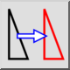
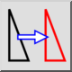
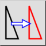
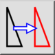

Flytte/kopiere
Værktøjslinje/ikon:
 

Menu: Modificere > Flytte/kopiere
Genvej: M, V
Kommandoer: move | mv
Dette er en automatisk oversættelse.
Værktøjslinje/ikon:
 

Menu: Modificere > Flytte/kopiere
Genvej: M, V
Kommandoer: move | mv
Flytter eller kopierer enheder.